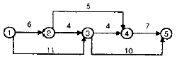
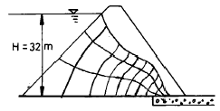
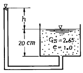

건설재료시험산업기사 (2004-05-23 기출문제)
1과목: 콘크리트공학
1. 콘크리트 공시체 제작을 위해 강제 몰드(mold)를 제작할 때 몰드의 접촉부에 그리이스(grease) 등을 엷게 바르는 이유는?
- 누수의 방지
- 공시체 표면의 청결 유지
- 공기함유량의 감소
- 캐핑(capping)작업의 용이
(정답률: 59%)

2. 고강도콘크리트의 배합시에 요구되는 다음 사항 중 잘못 설명된 것은?
- 단위수량은 소요의 워커빌리티를 얻을 수 있는 범위내에서 가능한 작게 하여야 한다.
- AE제를 사용하지 않는 것을 원칙으로 한다.
- 실리카흄(silica fume) 등의 혼화재를 사용한다.
- 잔골재율은 가능한 크게 하도록 한다.
(정답률: 알수없음)
3. 콘크리트의 양생시 주의할 사항으로 잘못된 것은?
- 표면을 충분한 습윤 상태로 유지해야 한다.
- 적당한 온도를 유지해 주어야 한다.
- 습윤과 건조를 반복시켜야 콘크리트의 건조수축을 줄일 수 있다.
- 충격이나 하중으로부터 보호해 주어야 한다.
(정답률: 알수없음)
4. 하중에 의하여 콘크리트에 일어나는 인장응력을 상쇄하기 위하여 미리 압축응력을 준 콘크리트를 무엇이라고 하는가?
- 철근 콘크리트
- PS 콘크리트
- 프리팩트 콘크리트
- 레디 믹스트 콘크리트
(정답률: 알수없음)
5. 반죽 질기 여하에 따르는 작업의 난이 정도 및 재료 분리에 저항하는 정도를 나타내는 굳지 않은 콘크리트의 성질은 어느 것인가?
- 성형성
- 트래피커빌리티
- 피니셔빌리티
- 워커빌리티
(정답률: 50%)
6. 다음의 콘크리트 크리프 설명 중 옳은 것은?
- 온도가 높을수록 크리프량이 적다.
- 재하할 때 재령이 짧을수록 크리프량이 적다.
- 물-시멘트 비가 클수록 크리프량이 많다.
- 진동기 다짐을 한 콘크리트는 크리프량이 많다.
(정답률: 60%)
7. 콘크리트를 배합설계 할 때 물-시멘트비를 정하는 기준이 아닌 것은?
- 단위시멘트량
- 압축강도
- 내동해성
- 수밀성
(정답률: 알수없음)
8. 다음 중 콘크리트의 비파괴시험방법에 속하지 않는 것은?
- 리몰딩시험법
- 반발경도법
- 초음파속도법
- 충격공진법
(정답률: 알수없음)
9. 한중콘크리트에 대한 설명중 틀린 것은?
- 한중콘크리트의 적용기간은 하루의 평균기온이 4℃이하로 예상되는 기간이다.
- 치기를 할 때의 콘크리트 온도는 20℃ 이상이어야 한다.
- 가열한 재료를 사용하여 혼합할 때는 먼저 물과 골재를 믹서에 투입한다.
- 시멘트는 가열하지 않는다.
(정답률: 70%)
10. 콘크리트의 중성화에 관한 설명으로 옳은 것은?
- 콘크리트의 중성화는 대기중의 탄산가스에 의해 콘크리트 중의 탄산칼슘이 수산화칼슘으로 변하는 것을 말한다.
- 콘크리트의 표면에 타일을 붙이는 경우에도 중성화속도는 거의 변하지 않는다.
- 중성화 깊이는 대기에 접한 기간의 대략 2승에 비례한다.
- 현장에서 친 콘크리트 벽의 중성화 속도는 일반적으로 실내로 향한 면이 실외로 향한 면에 비하여 빠르다.
(정답률: 알수없음)
11. 콘크리트의 수축균열을 방지하기 위한 대책으로 옳지 않은 것은?
- 단위수량을 적게 사용한다.
- 분말도가 높은 시멘트를 사용한다.
- 양생을 충분히 한다.
- 철근을 많이 사용한다.
(정답률: 알수없음)
12. 수밀성이 좋은 콘크리트를 만들기 위한 조치로서 적당하지 않는 것은?
- 물-시멘트비를 증가시켜 콘크리트의 밀도를 촘촘하게 한다.
- 습윤양생을 실시하여 건조수축을 줄여 공극이 서로 연결되지 않게 한다.
- 좋은 품질의 AE제나 감수제를 사용한다.
- 블리딩을 작게 한다.
(정답률: 알수없음)
13. 긴급 보수가 필요한 경우 다음 중 적당한 시멘트의 종류는?
- 알루미나 시멘트
- 실리카 시멘트
- 고로시멘트
- 중용열 포틀랜드 시멘트
(정답률: 알수없음)
14. 진동다짐을 할 때 진동기를 아래층 콘크리트 속에 얼마정도 찔러 넣어야 하는가?
- 5cm
- 10cm
- 15cm
- 20cm
(정답률: 알수없음)
15. 육상이나 해상의 공기 중에서 시공하는 해양콘크리트에 대한 설명 중 틀린 것은?
- 시멘트는 해수의 작용에 내구적인 고로슬래그시멘트, 플라이애시시멘트 등의 혼합시멘트가 좋다.
- 콘크리트가 충분히 경화되기 전에 직접 해수에 닿지 않도록 보호해야 한다.
- 해양구조물에서는 시공이음부를 둘 경우 성능 저하가 생기기 쉬우므로 가능한 피해야 한다.
- 해양콘크리트 제조시 건조수축 및 온도응력을 피하기 위하여 단위시멘트량을 가능한 작게 한다.
(정답률: 알수없음)
16. 콘크리트 1m3를 만드는데 필요한 골재의 절대용적이 0.65m3이며, 잔골재율(S/a)이 40%일 때 단위 굵은골재량은 얼마인가? (단, 굵은골재의 비중 2.65)
- 650 kg/m3
- 689 kg/m3
- 1,034kg/m3
- 1,590 kg/m3
(정답률: 알수없음)
17. 외기온도가 25℃를 넘을 때 양질의 지연제 등을 사용하지 않는다면 일반적으로 비비기로부터 치기가 끝날 때까지의 시간은 얼마로 제한되는가?
- 30 분
- 60 분
- 90 분
- 120 분
(정답률: 알수없음)
18. 표면건조포화상태와 공기중 건조상태의 함수량의 차이를 나타내는 용어는?
- 흡수량
- 유효흡수량
- 표면수량
- 절대흡수량
(정답률: 알수없음)
19. 다음 중 공사 후에 시행하는 콘크리트의 품질관리 항목으로 적절한 것은?
- 입도 시험
- 공기량 시험
- 반발경도 시험
- 로스앤젤레스 시험
(정답률: 알수없음)
20. 매스콘크리트의 온도균열 제어대책으로 거리가 먼 것은?
- 파이프 쿨링(pipe-cooling)
- 블록분할과 콘크리트 치기의 시간간격의 적절한 선정
- 프리웨팅(pre-wetting)
- 프리쿨링(pre-cooling)
(정답률: 알수없음)
2과목: 건설재료 및 시험
21. 다음 중에서 폭발력이 가장 강하고 수중에서도 폭발할 수 있는 다이너마이트(dynamite)는 어느 것인가?
- 규조토 다이너마이트
- 교질 다이너마이트
- 스트레이트 다이너마이트
- 분상 다이너마이트
(정답률: 알수없음)
22. 건설공사에 사용되는 그라우트(grout)용 혼화제로써 필요한 성질을 나열한 것 중 옳지 않은 것은?
- 그라우트를 수축시켜야 한다.
- 블리딩(bleeding)이 없어야 한다.
- 재료의 분리가 없어야 한다.
- 그라우트 주입이 쉬워야 한다.
(정답률: 알수없음)
23. 다음 설명중 플라스틱 재료의 일반적 성질이 아닌 것은?
- 소성, 가공성이 좋다.
- 전기 절연성이 크다.
- 접착력이 작으며 전성이 있다.
- 내산성과 내알칼리성이 있다.
(정답률: 알수없음)
24. 건설공사 품질시험기준중 되메우기 및 구조물 뒷채움의 입도시험의 시험빈도는?
- 500m3 마다
- 400m3 마다
- 필요시
- 토질변화시마다
(정답률: 알수없음)
25. 골재의 취급과 저장에 대한 설명 중 옳지 않은 것은?
- 표면수가 균등하게 되도록 저장 하여야 한다.
- 굵은골재를 취급할 때에는 대소알을 분리하여야 한다.
- 여름철에는 직사광선을 피할 수 있는 시설을 하여야 한다.
- 종류가 다른 골재는 각각 구분하여 따로 따로 저장하여야 한다.
(정답률: 알수없음)
26. 조립률이 3.20의 잔골재와 2.50의 굵은 골재를 중량이 1:2의 비율로 혼합하였다. 이 골재의 조립률은?
- 2.50
- 2.73
- 3.50
- 1.90
(정답률: 알수없음)
27. 화강암의 특징으로 옳지 않은 것은?
- 조직이 균일하고 내구성 및 강도가 크다.
- 외관이 아름답기 때문에 장식재로 쓸 수 있다.
- 내화성이 우수하여 고열을 받는 곳에 적당하다.
- 경도 및 자중이 커서 가공 및 시공이 곤란하다.
(정답률: 알수없음)
28. 르샤틀리에 비중병의 0.7mL까지 광유를 주입하고 시멘트 64g을 가하여 눈금 21.9mL증가되었을 때 이 시멘트의 비중은?
- 3.01
- 3.02
- 3.03
- 3.04
(정답률: 알수없음)
29. 다음 중 강재의 경도시험 방법에 속하지 않는 것은?
- 비커스(vicker's)
- 로크웰 (rockwell)
- 아이조드 (izod)
- 쇼어 (shore)
(정답률: 알수없음)
30. 철근 콘크리트용 굵은골재의 최대치수에 관한 설명으로 틀린 것은?
- 일반적인 경우는 20mm 또는 25mm가 표준이다.
- 단면이 큰 경우는 40mm가 표준이다.
- 철근 최소 수평 순간격의 4/5를 넘어서는 안된다.
- 부재최소치수의 1/5을 넘어서는 안된다.
(정답률: 알수없음)
31. 다음 재료의 기계적 성질 중 외력을 받을 때 변형 유발 정도를 표현하는 성질에 대한 용어는?
- 강성
- 연성
- 인성
- 취성
(정답률: 알수없음)
32. 토목분야의 건설공사 품질시험기준 중 아스팔트 포장의 혼합물 포설시에 혼합물의 밀도 및 두께시험은 포설 1층당 몇 아르 마다 실시하는가?
- 5 아르
- 30 아르
- 50 아르
- 100 아르
(정답률: 알수없음)
33. 강철의 지나친 취성과 경도를 줄이고 적당한 인성을 주기위하여 변태온도 이하로 다시 가열하여 서서히 냉각하는 열처리를 무엇이라 하는가?
- 불림
- 풀림
- 뜨임
- 담금질
(정답률: 20%)
34. Asphalt 침입도 시험시의 표준온도는 얼마인가?
- 20℃
- 23℃
- 18℃
- 25℃
(정답률: 28%)
35. 포졸란(pozzolan)을 사용한 콘크리트의 특징이 아닌 것은?
- 워커빌리티가 좋다.
- 수밀성이 크다.
- 발열량이 적다.
- 건조수축이 작다.
(정답률: 알수없음)
36. 시멘트의 비중이 낮아지는 원인으로 맞지 않는 것은?
- 시멘트 클링커 소성이 불충분하였을 때
- 시멘트의 저장기간이 길어 풍화되었을 때
- 분쇄한 클링커의 강열감량이 낮았을 때
- 고로슬래그, 포졸란 등 광물질 재료의 혼합비율이 높을 때
(정답률: 알수없음)
37. 다음중 포틀랜드 시멘트의 주성분으로 짝지워진 것은 어느 것인가?
- CaSO4, SiO2, Fe2O3, MgO
- CaSO4, SiO2, Fe2O3, Al2O3
- CaO, SiO2, Fe2O3, MgO
- CaO, SiO2, Fe2O3, Al2O3
(정답률: 알수없음)
38. 고무화 아스팔트는 스트레이트 아스팔트에 비해 잇점이 있다. 잇점에 대한 설명 중 틀린 것은?
- 탄성 및 충격저항이 크다.
- 감온성이 크다.
- 마찰계수와 내후성이 크다.
- 부착력과 응집력이 크다.
(정답률: 알수없음)
39. 콘크리트용 혼화재인 실리카흄에 대한 설명으로 틀린 것은?
- 평균입경이 0.02∼0.54㎛인 구형의 초미립자로서 시멘트 수화물과 강력한 포졸란반응을 한다.
- 비중이 보통시멘트보다 약간 작은 2.1∼2.2 정도이며 비표면적은 보통시멘트의 70∼80배 정도이다.
- 실리카흄은 초기수화반응이 크게 일어나므로 반드시 응결지연제와 같이 사용해야 하며 고강도콘크리트에 주로 사용한다.
- 실리카흄은 시멘트경화체의 공극충전효과와 포졸란 반응으로 강도증진효과가 우수하다.
(정답률: 알수없음)
40. 아스팔트의 물리적 성질에 대한 설명으로 옳은 것은?
- 시료의 양단을 잡아당겨 시료가 끊어질 때까지의 늘어난 길이로 아스팔트의 강성을 측정한다.
- 온도 변화에 따라 아스팔트의 컨시스턴시가 변화하기 쉬운 정도를 신도라 한다.
- 아스팔트를 가열하여 불을 가까이 하는 순간에 불이 붙을 때의 온도를 연소점이라 한다.
- 아스팔트의 컨시스턴시와 교착력을 나타내는 성질을 점도라 한다.
(정답률: 알수없음)
3과목: 건설시공학
41. 기설(旣設)구조물에 대하여 기초부분을 신설, 개축, 또는 보강하는 공법으로서 고층건물의 시가지등에서 지하철을 건설하면서 이용되는 공법은?
- 언더피닝 공법
- 웰포인트 공법
- 프리로딩 공법
- 샌드드레인 공법
(정답률: 알수없음)
42. 역청계 포장의 유지수선으로 포장의 표층뿐만 아니라 필요에 따라서는 기층, 보조기층을 절취하고 아스팔트 혼합물로 채우는 방법은?
- 표면처리
- 패칭(Patching)
- 덧씌우기
- 파상고르기
(정답률: 알수없음)
43. Shield 공법의 합당한 지질은?
- 연약 지반
- 보통 흙
- 풍화암
- 경암
(정답률: 알수없음)
44. 부벽식 댐에 대한 설명 중 틀린 것은?
- 지반이 비교적 연약한 곳에 유리하다.
- 댐 재료가 얻기 힘들 때 좋다.
- 지지력은 중력댐보다 크다.
- 강성이 약하고 지진에 대한 저항이 적다.
(정답률: 알수없음)
45. 다음중 교각의 세굴방지 공법이 아닌 것은?
- 사석공(捨石工)
- 이불망태공
- 수제공(水制工)
- 침매공(沈埋工)
(정답률: 알수없음)
46. 다음과 같은 공정표에서 주공정(CP)을 옳게 나타낸 것은?

- 1-3-5 , 21일
- 1-3-4-5 , 22일
- 1-2-3-4-5 , 21일
- 1-2-4-5 , 18일
(정답률: 알수없음)
47. 히빙방지 대책으로 다음에서 틀린 것은?
- 표토를 깍아내어 위의 흙하중을 작게한다.
- 굴착면에 하중을 가해준다.
- 지반개량을 한다.
- 흙막이 벽의 관입깊이를 작게한다.
(정답률: 알수없음)
48. 성토와 구조물 접속부의 뒤채움 재료가 갖추어야 할 조건 중 옳지 않은 것은?
- 다짐이 양호해야 한다.
- 투수성이 좋아야 한다.
- 압축성이어야 한다.
- 물의 침입에 의한 강도감소가 적은 재료라야 한다.
(정답률: 알수없음)
49. 본바닥 토량이 800m3이고, 덤프트럭(6m3적재량)1대로 운반하면 운반 소요 일수는? (단, 1대 1일 운반 횟수 10회, 토량변화율 (L)은 1.20)
- 10일
- 16일
- 19일
- 20일
(정답률: 알수없음)
50. 수평층 쌓기에 대한 설명 중 옳지 않은 것은?
- 수평층 쌓기에는 후층쌓기와 박층쌓기가 있다.
- 이 공법은 공사 중 압축이 적어 완성후에도 침하가 크다.
- 저수지의 흙댐, 옹벽, 교대 등의 뒷채움 흙에 많이 사용하는 공법이다.
- 공사 기간이 길어지고 공사비가 많이 드는 결점이 있다.
(정답률: 알수없음)
51. 용수, 배수, 운하등 성질이 다른 수로가 교차하지만 합류시킬 수 없을 때 또는 수로교로서는 안될 때 일반적으로 사용되는 관거는?
- 함거
- 관암거
- 다공관거
- 사이펀관거
(정답률: 알수없음)
52. 다짐 유효깊이가 크고 흙덩어리를 분쇄하여 토립자를 이동 혼합하는 효과에 있어서 함수비의 조절도 되고 함수비가 높은 점토질의 다짐에 대단히 유리한 다짐 기계는?
- 진동롤러
- 탬핑롤러
- 탬퍼
- 로드롤러
(정답률: 알수없음)
53. 흙막이 구조물 등의 계측에서 계측 위치를 선정할 때의 위치선정이 잘못된 것은?
- 중요한 구조물이 인접하여 있는위치
- 지하수위의 상승, 하강이 빈번하지 않은 위치
- 공사에 의한 계측기의 훼손이 적은 위치
- 흙막이 구조물이나 지반 조건이 특수한 위치
(정답률: 알수없음)
54. 댐축조 공사에서 계획저수량 이상의 유입되는 홍수량을 안전하게 방류할 수 있도록 설치하는 것을 무엇이라 하는가?
- 검사랑
- 여수로
- 취수로
- 조절부
(정답률: 알수없음)
55. 옹벽의 시공에 관한 다음 설명중 옳은 것은?
- 기초는 견고한 지반이 아니어도 된다.
- 뒤채움 돌은 다짐을 할 필요가 없다.
- 수발공은 메워지지 않게 해야 한다.
- 배면에는 지표수가 잘 침투하도록 하여야 한다.
(정답률: 알수없음)
56. 다음 용어중 토목공사의 끝손질면으로 토공의 균형을 이루도록하여 정하는 면은?
- 법면경사
- 천단
- 시공기면
- 토공정규
(정답률: 알수없음)
57. 여러대의 착암기를 대차위에 장치하여 자유로이 상하 좌우로 이동시켜 임의의 위치에 고정시키면서 굴착작업을 편리하고 능률적으로 할 수 있게 한 장비는?
- 드리프터(drifter)
- 스토퍼(stoper)
- 씽커(sinker)
- 점보드릴(jumbo drill)
(정답률: 34%)
58. 다음 중 연약 지반 개량 공법이 아닌 것은?
- 샌드 드레인 공법(Sand Drain)
- 부사 공법(Sand mat)
- 페이퍼 드레인 공법(Paper Drain)
- 텍솔 공법(Texsol)
(정답률: 알수없음)
59. 교통하중이나 포장 등 상부하중을 최종적으로 지지하는 포장의 기초부분을 무엇이라 하는가?
- 보조기층
- 동상방지층
- 중간층
- 노상층
(정답률: 알수없음)
60. 토공의 굴착작업에 사용하는 기계로서 적당하지 않은 기계는?
- 스태빌라이저(Stabilizer)
- 백호우(Back Hoe)
- 트렌처(Trencher)
- 크램셀(Clam Shell)
(정답률: 알수없음)
4과목: 토질 및 기초
61. 모래의 내부마찰각 ø와 N치와의 관계를 나타낸 Dunham의 식 ø= 12N +C에서 상수C의 값이 제일 큰 경우는?
- 토립자가 모나고 입도분포가 좋을 때
- 토립자가 모나고 균일한 입경일 때
- 토립자가 둥글고 입도분포가 좋을 때
- 토립자가 둥글고 균일한 입경일 때
(정답률: 알수없음)
62. 지표가 수평인 곳에 높이 5m의 연직옹벽이 있다. 흙의 단위중량이 1.7t/m3, 내부마찰각 30° 이고 점착력이 없을 때 옹벽에 작용하는 주동토압은 얼마인가?
- 4.25 t/m
- 5.64 t/m
- 6.75 t/m
- 7.08 t/m
(정답률: 24%)
63. 일반적인 기초의 필요조건으로 거리가 먼 것은?
- 동해를 받지 않는 최소한의 근입깊이를 가질 것
- 지지력에 대해 안정할 것
- 침하가 전혀 발생하지 않을 것
- 사용성, 경제성이 좋을 것
(정답률: 알수없음)
64. 50t의 집중하중이 지표면에 작용할때 3m 떨어진 점의 지하 5m 위치에서의 연직응력은 얼마인가? (단, 영향계수는 0.2214라고 한다.)
- 0.392t/m2
- 0.443t/m2
- 0.526t/m2
- 0.610t/m2
(정답률: 알수없음)
65. 다음 중 동상(凍上)이 일어나기 쉬운 지반 조건인 것은?
- 지하수위 바로위에 불투수성 점성토지반이 존재한다.
- 모래질 지반으로 지하수위가 지표면에서 10m이상 멀다.
- 실트질 지반으로 지하수위가 지표면과 가깝다.
- 실트질 모래지반으로 지반의 지지력이 상당히 높다.
(정답률: 알수없음)
66. 다음 전단 시험법 가운데 간극수압을 측정하여 유효 응력으로 정리하면 압밀배수 시험(CD-test)과 거의 같은 전단 상수를 얻을 수 있는 시험법은?
- 비압밀 비배수시험(UU-test)
- 직접전단시험
- 압밀 비배수시험(CU-test)
- 일축압축시험(qu-test)
(정답률: 알수없음)
67. 어떤 점토시료를 일축압축 시험한 결과 수평면과 파괴면이 이루는 각이 48°였다. 점토시료의 내부마찰각은?
- 3°
- 18°
- 30°
- 6°
(정답률: 알수없음)
68. 흙의 다짐에서 다짐 에너지를 증가시키면 어떤 변화가 생기는가?
- 최적 함수비는 증가하고,최대 건조밀도는 감소한다.
- 최적 함수비와 최대 건조밀도는 증가한다.
- 최적 함수비는 감소하고,최대 건조밀도는 증가한다.
- 최적 함수비와 최대 건조밀도는 감소한다.
(정답률: 알수없음)
69. 양면배수 조건으로 압밀도 100%에 도달하는데 1년이 걸렸다. 일면배수일 경우 몇 년 걸리겠는가?
- 0.25년
- 1년
- 2년
- 4년
(정답률: 알수없음)
70. 말뚝의 지지력을 결정하기 위해 엔지니어링 뉴스 공식을 사용할 때 안전율은?
- 1
- 2
- 3
- 6
(정답률: 14%)
71. 다음중 직접 기초라고 할수없는 기초는?
- 독립기초
- 복합기초
- 전면기초
- 말뚝기초
(정답률: 알수없음)
72. 다음 그림과 같이 필터를 설치하여 만든 제방 100m길이당 침투 수량을 구하면? (단, 흙 댐의 투수계수는 0.085㎝/sec이다.)

- 783.36m3/day
- 78336m3/day
- 940.03m3/day
- 94003m3/day
(정답률: 알수없음)
73. 여러종류의 흙을 같은 조건으로 다짐시험을 하였다. 일반적으로 최적 함수비가 가장 작은 흙은?
- GW
- ML
- SW
- CH
(정답률: 46%)
74. 연약지반 개량공법으로 압밀의 원리를 이용한 공법이 아닌 것은?
- 프리로딩 공법
- 바이브로 플로테이션 공법
- 대기압 공법
- 페이퍼 드레인 공법
(정답률: 알수없음)
75. 어떤 흙의 간극비(e)가 0.52 이고, 흙속에 흐르는 물의 이론 침투속도(v)가 0.214 cm/sec 일 때 실제의 침투유속(Vs)은?
- 0.424 cm/sec
- 0.525 cm/sec
- 0.626 cm/sec
- 0.727 cm/sec
(정답률: 알수없음)
76. 어떤 시료가 조밀한 상태에 있는가, 느슨한 상태에 있는가를 나타내는데 쓰이며, 주로 모래와 같은 조립토에서 사용되는 것은?
- 상대밀도
- 건조밀도
- 포화밀도
- 수중밀도
(정답률: 알수없음)
77. 지름 30cm인 재하판으로 측정한 지지력계수 K30=6.6kg/cm3일 때 지름 75cm인 재하판의 지지력계수 K75은?
- 3.0kg/cm3
- 3.5kg/cm3
- 4.0kg/cm3
- 4.5kg/cm3
(정답률: 42%)
78. 흙의 연경도(consistency)에 관한 다음 설명 중 옳지 않은 것은?
- 소성지수는 액성한계와 소성한계의 차로서 표시된다.
- 유동지수는 유동곡선의 기울기이다.
- 수축한계를 지나서도 수축이 계속되는 것이 보통이다.
- 어떤 흙의 함수비가 소성한계보다 높으면 그 흙은 소성상태 또는 액성상태에 있다고 할 수 있다.
(정답률: 알수없음)
79. 어떤 흙의 전단실험결과 C=1.8kg/cm2, ø=35°, 토립자에 작용하는 수직응력 σ =3.6kg/cm2 일 때 전단강도는?
- 4.89kg/cm2
- 4.32kg/cm2
- 6.33kg/cm2
- 3.86kg/cm2
(정답률: 알수없음)
80. 그림에서 수두차 h를 최소 얼마 이상으로 하면 모래시료에 분사현상이 발생하겠는가?

- 16.5cm
- 17.0㎝
- 17.4㎝
- 18.0㎝
(정답률: 28%)